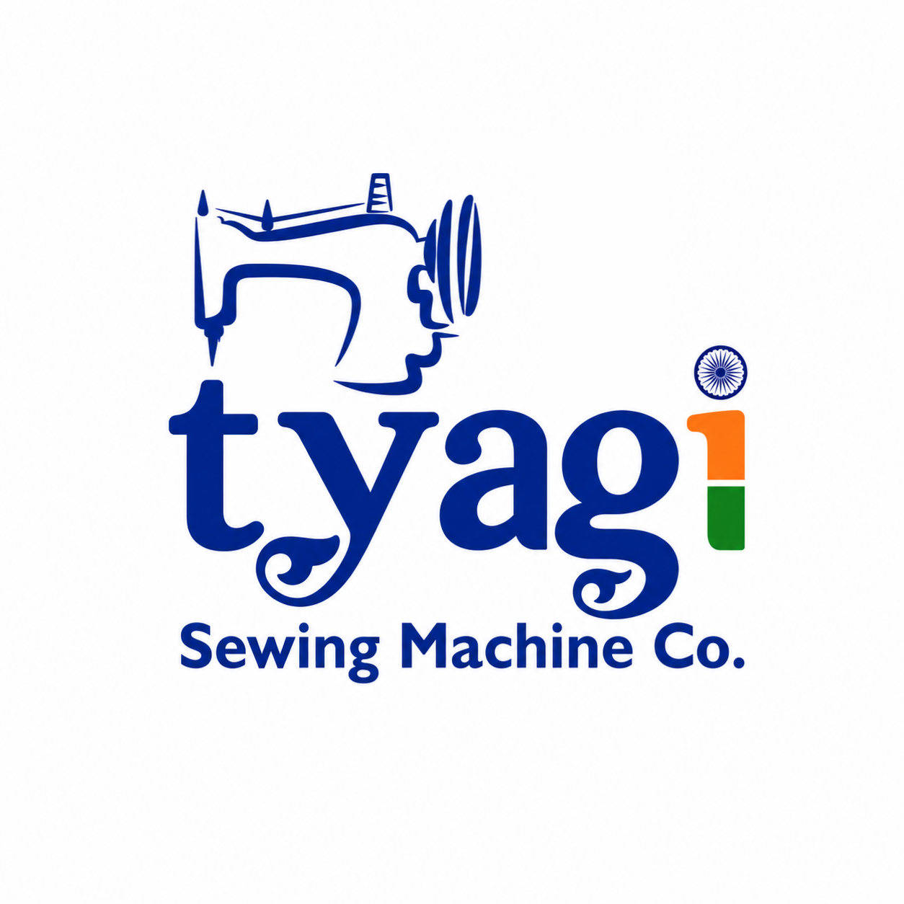

People first
Respectful communication and lasting customer relationships.

Presenting
 Vivek KantBusiness Executive
Vivek KantBusiness Executive
Business. People. Progress.
I’m Vivek Kant, a Business Executive contributing to the growth and digital presence of Tyagi Sewing Machine Co. through branding, communication and customer engagement.
 VIVEK KANT · PERSONAL PROFILE
VIVEK KANT · PERSONAL PROFILEClear communication · Thoughtful branding · Stronger connections
I believe good business is built through trust, consistency and the way people experience a brand.
My work centres on supporting the family business with a modern approach—bringing together product presentation, digital communication and customer relationships, while learning from the experience of the people who built it.
Respectful communication and lasting customer relationships.
Presenting products and information in a clear, professional way.
Exploring better ways to work, communicate and grow.
My work focuses on business, marketing and customer relationships. Outside work, films, filmmaking and video editing are personal hobbies.

A practical mix of business support and digital work.
Supporting brand presentation, product posters, social media content and a consistent visual identity.
Helping make company information, product communication and online touchpoints easier to explore.
Supporting clear communication, customer feedback and business development initiatives.
Bringing a thoughtful eye to design and presentation, while keeping the business objective in focus.
A focused view of business communication, digital presence and customer experience. Placeholder concepts are clearly marked.
Placeholder for approved product posters, machine visuals or catalogue presentation work.
Placeholder for genuine branding, layouts and creative design samples.
Placeholder for clear feedback pathways, helpful responses and customer-first communication.
Placeholder for website updates, digital communication and online experience projects.
These are starter placeholders, not claims of completed client projects. Replace each card with real work when ready.
A short timeline of education and current direction.
Completed Class XII, building a foundation in commerce and quantitative subjects.
University of Delhi — School of Open Learning.
Contributing to marketing, branding, digital presence and customer engagement at Tyagi Sewing Machine Co., under the guidance of Mr. Rajni Kant. Outside work, I enjoy films, filmmaking and video editing as personal hobbies.
Download a professional profile or save a contact card with phone, WhatsApp, email and both Instagram accounts.
I contribute to marketing, branding, digital presence, product presentation and customer engagement, working under the guidance of Mr. Rajni Kant.
For official products, specifications and catalogue information, visit the company website.
Share feedback, a suggestion or a company complaint. Submissions are routed to tyagisewingofficial@gmail.com, and you can receive an email confirmation.
Customer-first contact
Feedback and complaints go only to tyagisewingofficial@gmail.com. Enter a valid email to receive a confirmation. Please do not send passwords, payment details or sensitive personal information.
Call, WhatsApp, email or connect with me and the company on Instagram.
A small space for future articles and website updates.
A planned note on useful product information, visual consistency and customer-friendly communication.
Placeholder · Not publishedA future reflection on learning, experimenting and improving a digital profile over time.
Placeholder · Not publishedA future space for improving how customers share feedback and get clear responses.
Placeholder · Not publishedNo. This is Vivek Kant’s personal profile website. The official company website and catalogue are linked separately.
The form routes feedback and complaints to tyagisewingofficial@gmail.com through a free external form-processing service. The site owner must activate the email endpoint once before public use; customers see a website confirmation and receive an email autoresponse.
The project cards are marked placeholders until real, approved samples are added. They are not claims of completed client work.
The package is designed for free static hosting such as GitHub Pages and uses no paid libraries or backend. Usage limits and platform policies may change.
Call or WhatsApp +91 9625013545, email tyagisewingofficial@gmail.com or info@tyagisewingmachine.com, or use either Instagram account.